Day 1 : Awal Mula Aku Suka K-Pop
Saat itu, aku masih duduk di bangku SMP kelas 7, sebuah masa yang penuh dengan rasa ingin tahu dan pencarian identitas diri. Hari itu terasa seperti hari-hari biasa lainnya, aku menghabiskan waktu luang di rumah setelah pulang sekolah. Biasanya, aku lebih suka duduk di kamar atau scrolling media sosial tanpa tujuan jelas. Tapi hari itu, ada sesuatu yang berbeda.
Keponakanku, yang berusia sekitar 8 tahun, sedang duduk di ruang keluarga dengan ponsel di tangannya. Seperti biasa, dia suka menonton video musik di YouTube, dan saat itu, dia tengah terfokus pada layar ponselnya. Awalnya aku tidak terlalu memperhatikan, karena aku tidak berminat dengan apa yang dia tonton. Namun, tiba-tiba, sebuah suara keras dan energik memecah keheningan ruang keluarga, sebuah suara yang tak biasa.
“Ddu-du ddu-du, ddu-du ddu-du!” teriakan vokal yang menggema, menggetarkan udara di sekitar kami. Aku menoleh, penasaran dengan apa yang sedang dia tonton. Ternyata, itu adalah video musik dari Blackpink, grup K-pop yang sedang hits di seluruh dunia. Keponakanku terlihat begitu asyik mengikuti gerakan koreografi yang sangat energik, matanya penuh semangat, dan aku bisa merasakan betapa dia menikmati setiap detiknya.
Aku yang awalnya hanya sekadar melirik, akhirnya tertarik untuk menonton lebih lama. Di layar ponsel, aku melihat empat gadis cantik yang tampaknya sangat percaya diri dan memukau. Mereka mengenakan pakaian yang stylish dan modern, dengan penampilan yang keren dan penuh energi. Musik yang mereka bawakan sangat catchy, dan irama beat-nya membuatku tidak bisa berhenti mengangguk-anggukkan kepala.
"Ini siapa?" tanyaku kepada keponakanku, meskipun aku sudah bisa menebak jawabannya.
"Ini Blackpink, Kak! Mereka grup K-pop dari Korea. Lagu ini judulnya 'DDU-DU DDU-DU'! Lihat, keren kan?" jawab keponakanku dengan wajah penuh semangat.
Aku hanya tersenyum kecil mendengarnya, masih merasa agak bingung dengan apa yang baru saja aku lihat. Tapi sesuatu dalam diri ku tergerak, ada perasaan ingin tahu yang mendalam. "K-pop? Apa itu?" pikirku dalam hati. Aku merasa seolah-olah baru saja menemukan sesuatu yang menarik dan asing, namun memikat.
Setelah kejadian itu, aku mulai penasaran lebih lanjut. Tidak hanya mendengar dari keponakanku, aku pun mulai mencari tahu tentang grup Blackpink. Aku menemukan banyak video lain, dan kali ini aku menonton dengan lebih fokus. Aku terpesona dengan cara mereka menari, dengan koreografi yang sangat teratur namun terasa begitu bebas. Mereka tampak sangat kompak, namun setiap anggota memiliki karakter yang berbeda, dan itu membuatku semakin tertarik.
Aku mulai mendengarkan lebih banyak lagu mereka, seperti "Boombayah" dan "As If It's Your Last". Setiap lagu yang mereka keluarkan memiliki energi yang luar biasa, sesuatu yang belum pernah kutemui sebelumnya dalam musik. Musik K-pop terasa begitu hidup, berwarna, dan menyenangkan. Aku merasa seperti memasuki dunia yang penuh dengan kreativitas, energi, dan semangat yang menular.
Hari-hari berikutnya, aku semakin terlibat dengan dunia K-pop. Tidak hanya Blackpink, aku juga mulai menggali grup-grup K-pop lainnya. EXO, BTS, Twice, Red Velvet, semua grup ini menjadi bagian dari perjalanan musikku. Aku menghabiskan berjam-jam menonton video musik, mengikuti perkembangan mereka, membaca berita tentang comeback mereka, dan berbincang dengan teman-teman baru yang ternyata juga suka K-pop. Ada semacam komunitas yang tumbuh di sekitar diriku, dan aku merasa menjadi bagian dari sesuatu yang lebih besar.
K-pop tidak hanya sekadar musik, ia menjadi sebuah pengalaman yang menyeluruh. Dari menonton MV, mendengarkan lagu-lagu yang menarik, hingga belajar tentang budaya Korea dan bahasa Korea sendiri. Aku mulai mempelajari lirik-lirik lagu mereka, mencoba mengerti makna di baliknya. Ada perasaan yang berbeda setiap kali mendengarkan lagu K-pop, sebuah perasaan kegembiraan, semangat, bahkan terkadang melankolis.
Selain itu, K-pop juga membawaku untuk lebih menghargai keragaman budaya. Aku mulai menyadari betapa banyaknya budaya yang bisa diambil dari setiap grup dan artis K-pop, dari cara mereka berinteraksi dengan penggemar, cara mereka berpenampilan, hingga nilai-nilai yang mereka bawa dalam setiap lagu dan penampilan. Mereka tidak hanya menyajikan musik, tetapi juga sebuah pesan yang mendalam tentang persatuan, keberanian, dan perjuangan.
Tentu saja, ada banyak hal yang membuatku merasa dekat dengan K-pop, momen-momen seperti ketika aku menyadari bahwa musik ini bisa menghubungkan orang dari berbagai penjuru dunia. Aku menemukan teman-teman baru di sekolah yang juga menyukai K-pop, dan kami sering berbincang tentang lagu favorit, comeback grup, dan bahkan berbagi merchandise K-pop.
Dari hari itu, ketika pertama kali aku melihat keponakanku menonton "DDU-DU DDU-DU", dunia K-pop telah membawa perubahan besar dalam hidupku. Bukan hanya karena musiknya yang menyenangkan, tetapi juga karena K-pop telah mengajarkanku banyak hal tentang semangat, kreativitas, dan persahabatan yang melampaui batasan.
Kini, K-pop sudah menjadi bagian dari diriku. Tidak hanya sebagai hobi atau kesenangan, tetapi juga sebagai cara untuk mengekspresikan diri, menemukan identitas, dan merasa terhubung dengan dunia yang lebih luas. Siapa sangka, momen kecil yang tampaknya biasa seperti melihat keponakanku menonton video musik, telah membuka jalan bagi sebuah perjalanan yang tak terduga ini.
Day 2 : Masuk ke Sekolah Asrama
.jpg)
Awal mula saya memutuskan untuk masuk ke SMK Pertanian di Samarinda sebenarnya bermula dari sebuah kegagalan yang cukup mengecewakan. Ketika lulus MTS, saya sangat berharap bisa masuk ke SMA 3 Samarinda, sekolah favorit di kota ini. Saya sudah menyiapkan diri dengan baik, namun ternyata saya tidak diterima. Kecewa? Tentu saja. Saya bingung harus melanjutkan ke sekolah mana karena pilihan yang ada terasa tidak sesuai dengan harapan saya.
Kemudian datanglah pandemi COVID-19 yang mengubah segalanya. Semua sekolah di Samarinda ditutup, dan kami harus melanjutkan pembelajaran secara online. Dalam kebingungan itu, saya mulai mencari informasi tentang sekolah lain, dan akhirnya saya memutuskan untuk mendaftar ke SMK Pertanian Samarinda, sebuah sekolah asrama yang sebelumnya tidak pernah saya pikirkan. Mungkin terdengar seperti keputusan yang terpaksa, tapi entah kenapa saya merasa ini bisa menjadi kesempatan baru.
Menyesuaikan diri dengan kehidupan asrama ternyata tidak mudah. Makanan di asrama jauh dari kata lezat, bahkan bisa dibilang sangat jauh. Saya masih ingat bagaimana rasanya makan di kantin yang sederhana, dengan menu yang terbatas, dan kadang-kadang saya merasa tidak bisa menelan. Terkadang, kami juga harus makan dengan porsi yang sedikit, yang membuat saya merasa lapar sepanjang hari.
Selain itu, ruangan tempat kami tinggal juga sangat sederhana. Tempat tidur yang sempit dan fasilitas yang terbatas membuat saya merasa tidak nyaman pada awalnya. Saya juga tidak bisa bepergian menggunakan kendaraan pribadi, dan jarak dari asrama ke sekolah cukup jauh. Setiap hari saya harus berjalan kaki, dan kadang-kadang itu menjadi tantangan tersendiri, terutama saat cuaca panas atau hujan.
Namun, semua rasa tidak nyaman itu mulai berkurang seiring waktu. Meskipun kehidupan di asrama penuh dengan kesulitan, saya mulai terbiasa dan belajar untuk menikmati hal-hal sederhana. Yang paling berharga dari pengalaman ini adalah bertemu dengan teman-teman baru. Kami saling mendukung, tertawa bersama, dan berbagi cerita. Mereka menjadi keluarga kedua saya, yang membuat kenangan indah selama di asrama semakin tak terlupakan.
Meskipun awalnya sulit, saya sekarang merasa berterima kasih karena bisa mengalami semua itu. SMK Pertanian Samarinda mengajarkan saya banyak hal, baik tentang kehidupan mandiri maupun pentingnya persahabatan. Saya tak akan pernah melupakan perjalanan panjang ini, dari kegagalan yang sempat membuat saya terpuruk, hingga akhirnya menemukan rumah di asrama dengan teman-teman yang luar biasa.
Day 3 : PRAKERIN Di Kebun Pak Agus

Selama masa Praktek Kerja Industri (PRAKERIN), saya berkesempatan untuk menjalani pengalaman yang tak terlupakan di Balikpapan, tepatnya di Karang Joang, di Rumah Pak Agus. Tempat ini tidak hanya memberikan pengetahuan tentang dunia pertanian, tetapi juga memberi saya pengalaman berharga dalam dunia pemanduan wisata untuk anak-anak sekolah yang berkunjung ke kebun Pak Agus.
Setiap hari, saya berinteraksi dengan anak-anak sekolah yang datang untuk belajar tentang cara menanam dan merawat tanaman. Mereka sangat antusias dan penasaran, dan tugas saya adalah menjadi pemandu yang menjelaskan berbagai proses yang ada di kebun tersebut. Saya mengajarkan mereka mulai dari cara menanam biji, merawat tanaman, hingga akhirnya memetik hasilnya. Melihat wajah ceria anak-anak saat mereka belajar hal baru adalah pengalaman yang sangat membahagiakan.
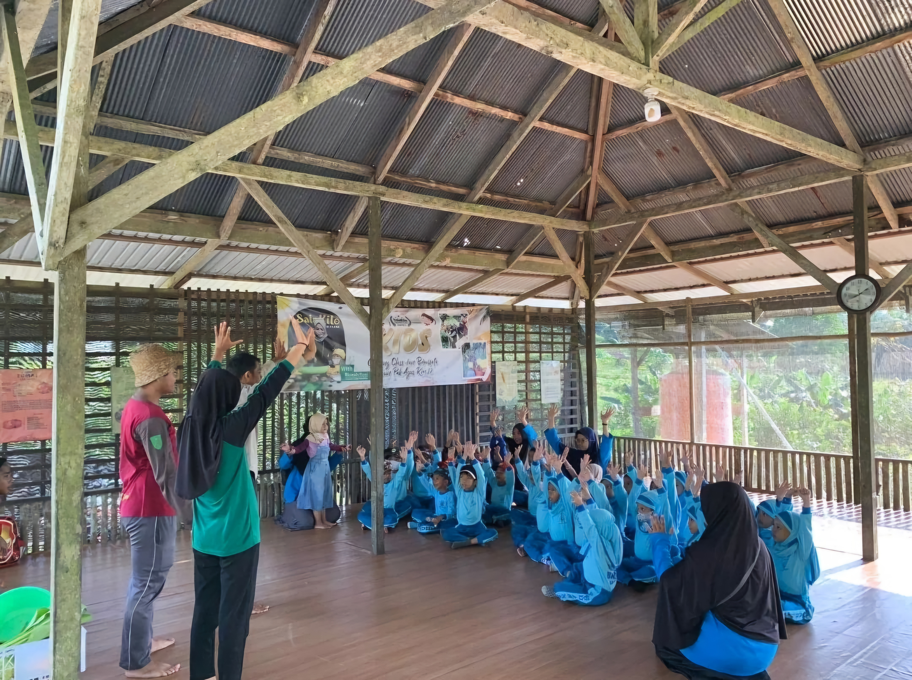Selama prakerin, saya juga belajar berbagai proses terkait dengan pertanian, terutama dalam hal penanaman dan pemeliharaan tanaman. Saya mendalami kompetensi utama seperti penanaman pepaya California, yang memerlukan teknik khusus agar bisa tumbuh dengan baik dan menghasilkan buah yang berkualitas. Selain itu, saya juga mempelajari kompetensi pilihan seperti penanaman jagung, yang tentunya memiliki cara perawatan yang berbeda dengan tanaman lainnya.
Yang membuat pengalaman ini semakin menyenangkan adalah suasana yang sangat kekeluargaan di kebun Pak Agus. Saya tidak hanya merasa seperti bagian dari sebuah tim, tetapi juga seperti bagian dari keluarga besar. Kami sering bercengkrama dan berbagi cerita, terutama saat kami bekerja bersama untuk menanam atau merawat tanaman. Pak Agus sendiri sangat ramah dan selalu memberikan arahan yang bermanfaat dalam setiap kegiatan.
Selain itu, saya juga belajar banyak tentang pentingnya ketekunan dan kerja keras dalam dunia pertanian. Proses menanam dan merawat tanaman tidaklah mudah, tetapi dengan kesabaran dan ketelitian, hasil yang didapatkan akan sangat memuaskan. Saya semakin memahami betapa pentingnya kontribusi sektor pertanian dalam kehidupan sehari-hari kita.
Kebun Pak Agus tidak hanya sekadar tempat belajar, tetapi juga tempat di mana saya merasakan kebahagiaan dan kehangatan. Saya mendapatkan banyak teman baru yang juga berbagi minat dalam bidang pertanian, dan mereka menjadi seperti saudara bagi saya. Saya merasa sangat bersyukur atas kesempatan ini, karena selain menambah pengetahuan, saya juga memperoleh kenangan manis yang tak akan saya lupakan.
Pengalaman saya selama prakerin di kebun Pak Agus ini tidak hanya memberi saya keterampilan praktis, tetapi juga membentuk saya menjadi pribadi yang lebih sabar, teliti, dan penuh rasa tanggung jawab. Ini adalah pengalaman yang sangat berharga, dan saya merasa beruntung bisa menjadi bagian dari perjalanan luar biasa ini.
Day 4 : Kisahku Menjadi Dancer
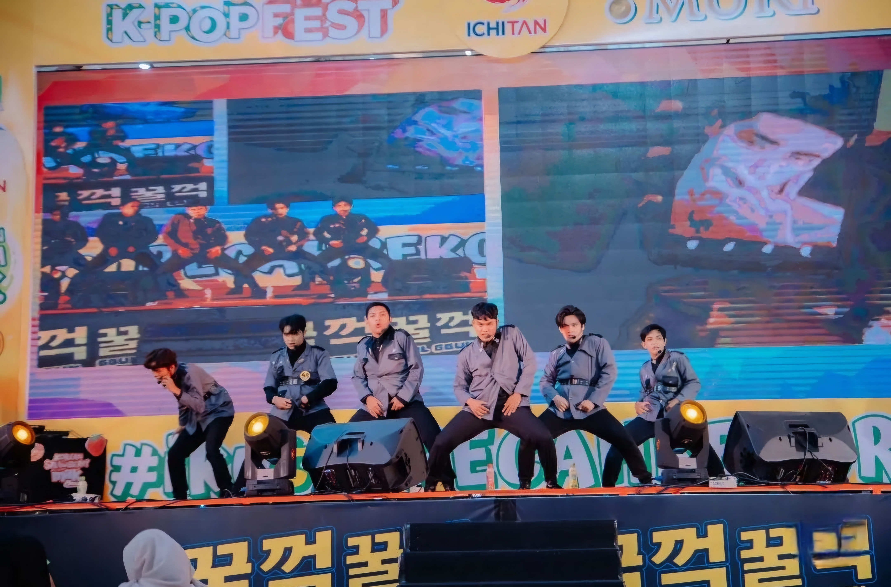Semua dimulai dari rasa penasaran yang tumbuh dalam diri saya. Sejak kecil, saya selalu tertarik dengan dunia seni, terutama musik dan gerakan tubuh. Saya sering melihat video dance cover di media sosial, dan ada sesuatu yang membuat saya merasa ingin ikut terlibat. Saya ingin merasakan bagaimana rasanya berada di atas panggung, mengekspresikan diri melalui gerakan-gerakan tari yang enerjik dan penuh makna.
Namun, ada satu hal yang selalu menghalangi niat saya yaitu ayah saya. Sejak kecil, beliau sudah mengingatkan saya untuk fokus pada pelajaran dan tidak membuang-buang waktu pada hal-hal yang tidak ada manfaatnya. Apalagi soal tari. Bagi beliau, dunia tari adalah sesuatu yang mengalihkan perhatian dari hal yang lebih penting, seperti pendidikan.
Meski demikian, hasrat saya untuk menari tak bisa saya sembunyikan. Saya mulai mencari informasi tentang dance cover secara diam-diam. Saya menonton tutorial di YouTube, belajar gerakan-gerakan dasar, dan merekam diri saya sendiri menari di kamar. Perlahan, saya merasa semakin tertarik dan ingin serius menekuni dunia ini.
Hingga akhirnya, saya mendengar tentang Soulmate Community, sebuah komunitas dance cover yang cukup terkenal di Samarinda. Teman-teman saya yang sudah lebih dulu terlibat menceritakan betapa menyenangkannya bergabung dengan komunitas ini. Mereka mengajarkan berbagai gaya tarian dan sering mengadakan latihan bersama. Suasana kekeluargaan yang hangat di dalam komunitas ini semakin membuat saya tertarik untuk bergabung.
Namun, ada satu tantangan besar yaitu saya belum bisa mengungkapkan pada ayah saya tentang keinginan saya ini. Saya tahu beliau akan melarang, mengingat pandangannya tentang tari yang tak begitu positif. Tapi saya merasa komunitas ini bisa memberikan saya kesempatan untuk berkembang lebih baik dan menjadi lebih percaya diri.
Akhirnya, saya memberanikan diri untuk mengikuti audisi di Soulmate Community tanpa sepengetahuan ayah. Saya berlatih keras, mengikuti jadwal latihan, dan bahkan mulai mendapatkan teman-teman baru yang memiliki passion yang sama dalam dance. Di sana, saya menemukan tempat yang membuat saya merasa dihargai dan memiliki tujuan yang jelas.
Meskipun saya mengikuti latihan dan kompetisi dance cover dengan semangat, saya tetap harus merahasiakan semuanya dari ayah saya. Namun, suatu hari, saya berhasil meraih juara pertama dalam sebuah lomba dance cover yang cukup bergengsi di kota Samarinda. Itu adalah pencapaian yang membanggakan, bukan hanya untuk diri saya, tetapi juga untuk Soulmate Community.
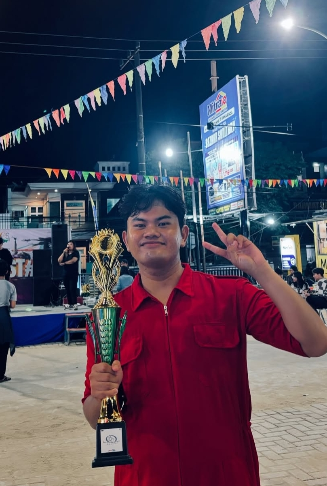Lomba itu menjadi titik balik dalam perjalanan saya. Ayah saya akhirnya mendengar kabar tentang prestasi saya dan, meskipun awalnya ragu, beliau mulai melihat keseriusan saya dalam dunia tari. Saya tidak hanya belajar menari, tetapi juga menunjukkan dedikasi dan kerja keras yang saya curahkan.
Setelah beberapa waktu, saya dengan hati-hati mengungkapkan kepada ayah tentang perjalanan saya di dunia dance cover dan keberadaan saya di Soulmate Community. Awalnya, beliau masih merasa khawatir, tetapi melihat bagaimana saya bisa berprestasi dan membawa juara di setiap lomba dance cover, perlahan pandangannya mulai berubah.
Ayah saya akhirnya memberi izin dan bahkan mulai mendukung saya untuk melanjutkan apa yang saya cintai. Beliau mengakui bahwa tari bisa menjadi saluran bagi saya untuk mengekspresikan diri, sekaligus mengembangkan disiplin dan rasa tanggung jawab.
Itulah perjalanan saya masuk ke dunia dance cover dan bergabung dengan Soulmate Community. Saya bersyukur bisa menemukan tempat yang mendukung perkembangan saya, dan yang lebih penting, saya bisa membuat ayah saya bangga atas apa yang saya capai. Semoga perjalanan ini akan terus membawa saya ke banyak pencapaian dan kebahagiaan!
Day 5 : Menjadi Kanda Duta Budaya Kota Samarinda 2024
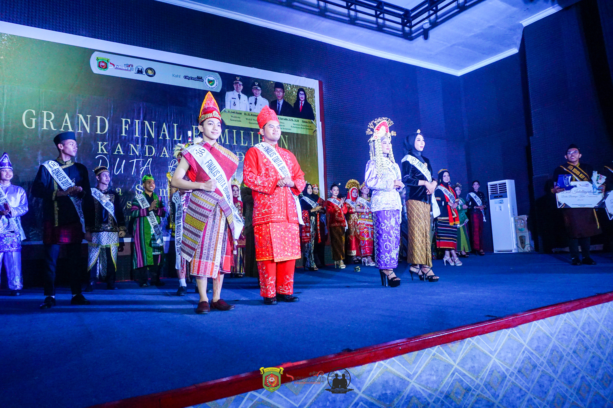Pada liburan semester perkuliahan tahun 2024, saya memutuskan untuk mengikuti lomba Duta Budaya Kota Samarinda, sebuah kompetisi yang sangat menarik dan penuh tantangan. Saya merasa ini adalah kesempatan yang baik untuk tidak hanya memperkenalkan diri tetapi juga mendalami lebih jauh tentang budaya daerah yang saya cintai.
Proses pendaftaran dimulai dengan pengisian formulir dan pengiriman berkas-berkas yang diperlukan. Setelah melewati tahap seleksi administrasi, saya terpilih untuk mengikuti karantina bersama peserta lainnya. Ketika saya tiba di tempat karantina, suasana terasa penuh semangat dan harapan, karena kami semua memiliki tujuan yang sama: menjadi duta budaya yang mampu mengangkat dan mempromosikan budaya Samarinda.
Selama karantina, saya mendapatkan berbagai materi kebudayaan yang sangat membuka wawasan, mulai dari sejarah Kota Samarinda, adat-istiadat, hingga kesenian tradisional yang ada di sana. Para narasumber yang hadir memberikan pemahaman yang mendalam tentang pentingnya menjaga dan melestarikan budaya lokal. Selain itu, saya juga diberi pelatihan mengenai public speaking, yang sangat berguna untuk mempersiapkan diri dalam kompetisi.
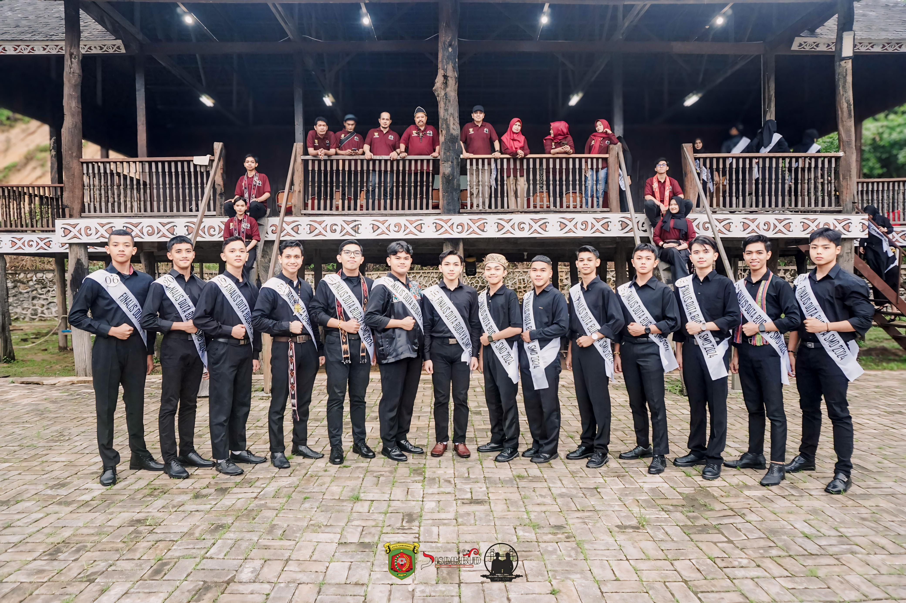Salah satu sesi yang paling saya tunggu adalah head speech, di mana kami diminta untuk menyampaikan pidato tentang bagaimana cara kami bisa berkontribusi dalam menjaga kebudayaan Samarinda di era modern. Saya berusaha menyampaikan ide-ide segar mengenai kolaborasi antara generasi muda dan budaya lokal, agar budaya ini tetap relevan dan dikenal luas oleh masyarakat.
Tantangan berikutnya adalah unjuk bakat, yang menjadi ajang bagi setiap peserta untuk menunjukkan kemampuan terbaiknya. Saya memilih untuk menyanyikan lagu Tiara Andhini yang berjudul Menjadi Dia yang saya pelajari secara otodidak. Meski sempat merasa gugup, saya berhasil membawakan lagu tersebut dengan penuh percaya diri, dan mendapatkan apresiasi dari juri serta peserta lainnya.
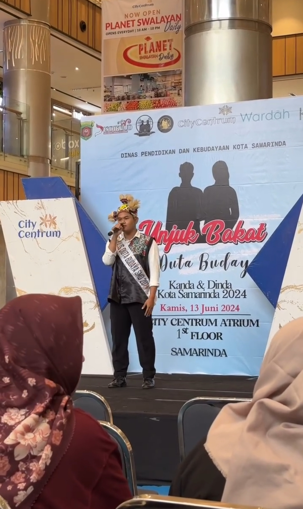Selain itu, saya juga menjalani deep interview, di mana saya ditanya berbagai pertanyaan mendalam tentang pandangan saya terhadap budaya Samarinda dan bagaimana saya bisa mempromosikannya dengan cara yang menarik. Saya merasa terhormat bisa berbagi pemikiran saya tentang pentingnya generasi muda dalam menjaga kelestarian warisan budaya.
Akhirnya, tiba saat yang dinanti-nanti, yaitu malam grand final. Suasana di panggung sangat meriah, dan jantung saya berdegup kencang saat nama saya disebutkan sebagai Kanda Duta Budaya Kota Samarinda 2024. Saya hampir tidak percaya dengan apa yang saya dengar, karena perjalanan panjang ini telah berbuah manis.
Saat menerima penghargaan tersebut, saya merasa sangat bangga dan terharu. Menjadi Kanda Duta Budaya Kota Samarinda adalah sebuah amanah besar yang harus saya jalankan dengan penuh tanggung jawab. Saya berkomitmen untuk terus berperan aktif dalam melestarikan dan mempromosikan budaya Samarinda di kancah nasional dan internasional, serta menginspirasi generasi muda untuk lebih peduli dan bangga akan kekayaan budaya kita.
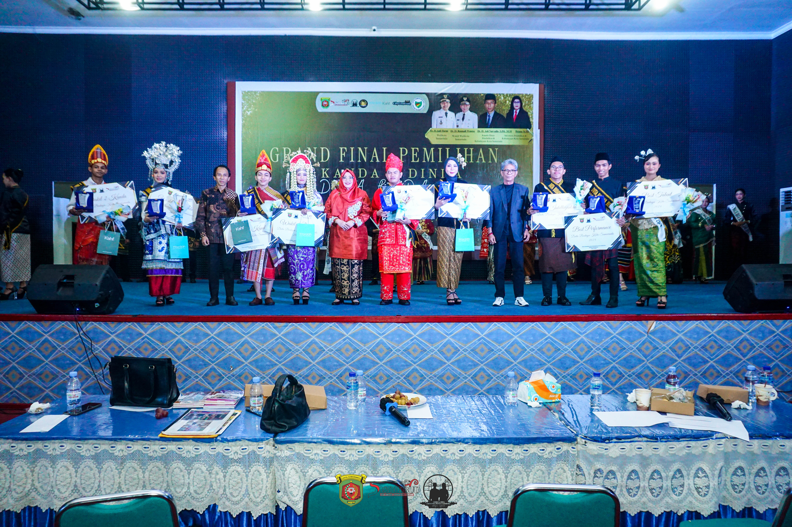Kemenangan ini bukan hanya untuk saya, tetapi juga untuk semua orang yang telah mendukung saya sepanjang perjalanan ini, terutama keluarga, teman-teman, dan mentor-mentor yang selalu memberikan semangat. Semoga saya bisa menjadi duta yang baik dan membawa dampak positif bagi kebudayaan Kota Samarinda!
Day 6 : Perjalanan Menuju Provinsi
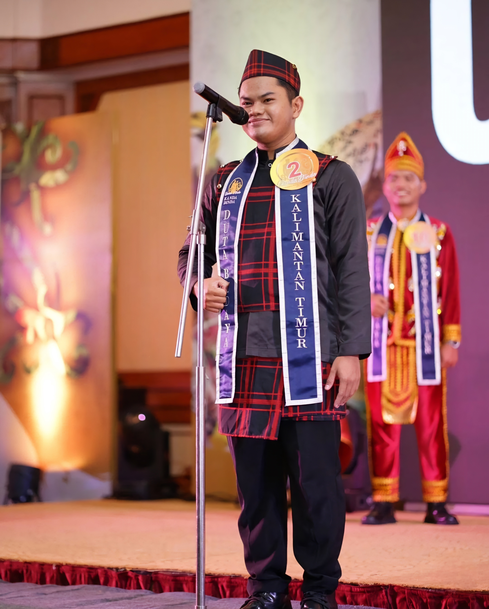Setelah terpilih sebagai Kanda Duta Budaya Kota Samarinda 2024, saya merasa sangat bersyukur. Namun, perjalanan saya belum berakhir. Tak lama setelah itu, saya menerima kabar menggembirakan bahwa saya terpilih untuk mewakili Kota Samarinda di lomba Duta Budaya tingkat Provinsi Kalimantan Timur. Walau waktu persiapan yang diberikan sangat singkat, hanya seminggu tetapi saya bertekad untuk memberikan yang terbaik.
Dalam waktu yang terbatas ini, saya harus mempersiapkan berbagai hal, mulai dari materi kebudayaan, unjuk bakat, hingga kostum yang akan saya pakai. Tentu saja, tantangan terbesar adalah waktu yang sangat minim. Saya hanya memiliki waktu satu minggu untuk mengasah semuanya, namun dengan semangat tinggi dan dukungan dari teman-teman serta keluarga, saya mulai menyusun strategi.
Hari pertama persiapan dimulai dengan mencari materi untuk head speech. Saya memutuskan untuk membawakan materi tentang bubur peca, sebuah makanan tradisional khas Samarinda yang memiliki filosofi mendalam tentang gotong royong dan kebersamaan. Saya menghubungkan makanan ini dengan nilai-nilai sosial yang bisa diambil oleh masyarakat, terutama generasi muda. Saya merasa bahwa materi ini bukan hanya bermanfaat untuk lomba, tetapi juga bisa menjadi sarana edukasi bagi banyak orang tentang budaya kita.
Sementara itu, untuk unjuk bakat, saya memilih untuk mendongeng. Saya ingin membawa kisah legenda Kuyang, yang sangat terkenal di Kalimantan. Dalam dongeng tersebut, saya bukan hanya menjadi pendongeng, tetapi juga bertransformasi menjadi Kuyang, sosok makhluk mistis yang dalam cerita rakyat sering kali menjadi simbol kekuatan dan misteri. Saya merasa mendongeng adalah cara yang efektif untuk membawa orang kembali pada akar budaya kita, sambil memberi hiburan yang mendalam.
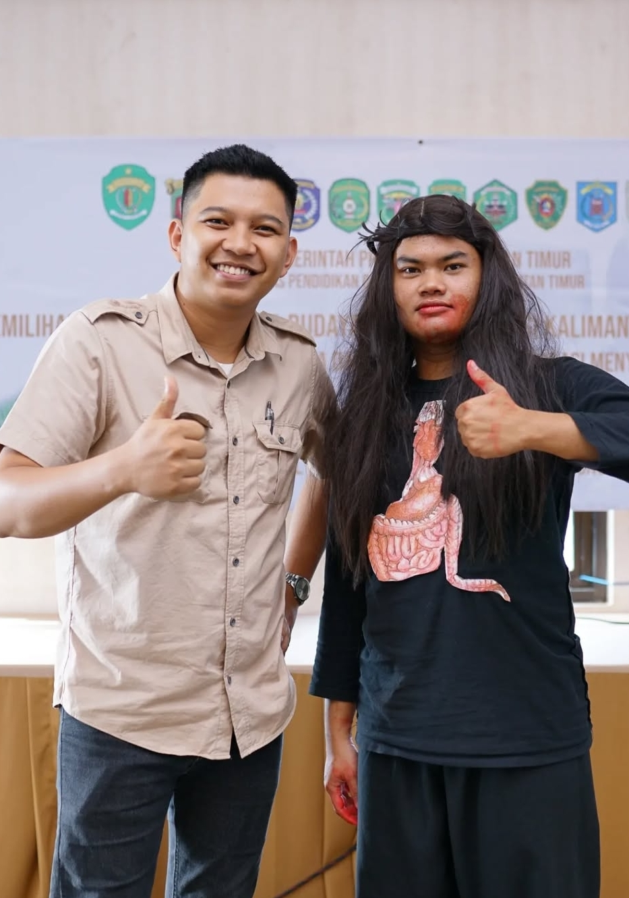Setelah menyusun materi dan latihan, saya pun menghadapi proses karantina yang berlangsung selama tiga hari. Hari pertama karantina dimulai dengan berbagai materi kebudayaan, di mana saya kembali mempelajari lebih dalam tentang adat, seni, dan budaya Kalimantan Timur. Hari itu juga, saya menjalani head speech di depan dewan juri dan peserta lainnya. Saya berusaha dengan maksimal untuk menyampaikan materi bubur peca dengan lancar dan meyakinkan, meskipun sedikit gugup. Alhamdulillah, materi yang saya bawakan disambut baik oleh juri dan peserta.
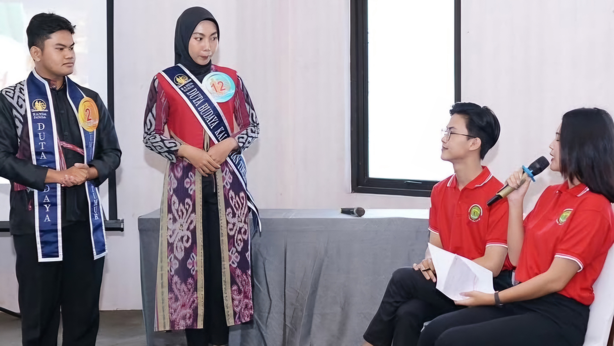Hari kedua dan ketiga di karantina terasa sangat padat. Selain sesi unjuk bakat dan deep interview, saya juga harus mempersiapkan penampilan tari untuk grand final. Setiap sesi latihan terasa penuh tantangan, karena waktu yang tersisa sangat terbatas. Kami juga melakukan latihan untuk opening number grand final yang memerlukan koordinasi dan kekompakan antar peserta. Tidak jarang saya merasa lelah, tetapi semangat dan fokus untuk mencapai tujuan utama menjadi duta budaya yang terbaik membuat saya terus berusaha keras.
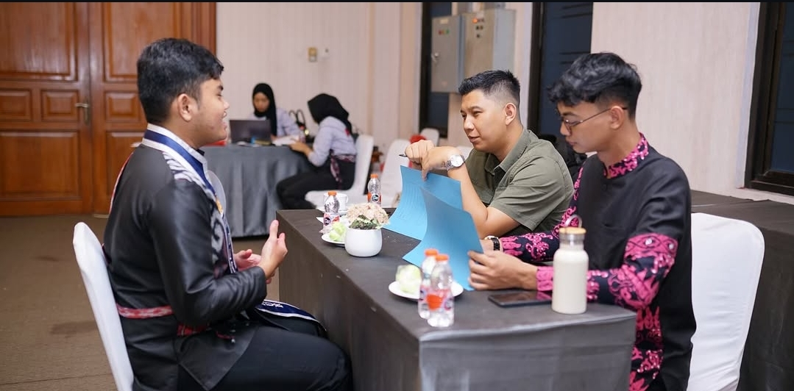 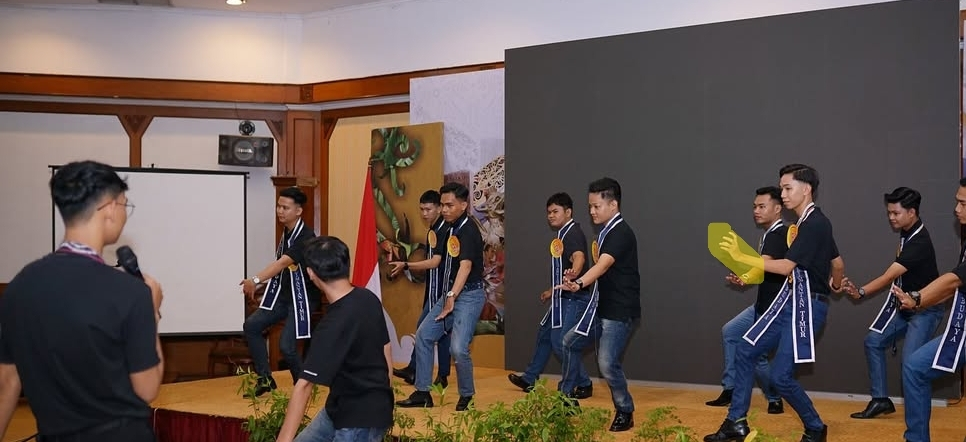Setelah berjuang selama tiga hari penuh latihan dan persiapan, akhirnya tiba saat pengumuman pemenang saat Grand final. Jantung saya berdegup kencang saat nama saya dipanggil sebagai Wakil 1 Kanda Duta Budaya Provinsi Kalimantan Timur 2024. Saya merasa terharu dan bangga. Meskipun saya gugup dan tidak menyangka akan mendapatkan posisi ini, saya tahu bahwa perjalanan ini adalah bukti dari kerja keras dan semangat pantang menyerah. Ini bukan hanya tentang memenangkan kompetisi, tetapi tentang mengangkat budaya kita, berbagi kisah-kisah yang tak ternilai harganya, dan memperkenalkan keindahan Kalimantan Timur kepada dunia. Terima kasih kepada semua yang telah mendukung saya, dari keluarga, teman-teman, hingga semua peserta yang telah memberikan semangat selama proses ini. Saya berjanji untuk terus menjadi duta budaya yang mampu menjaga dan melestarikan kebudayaan Kalimantan Timur, dan membawa inspirasi bagi generasi muda.